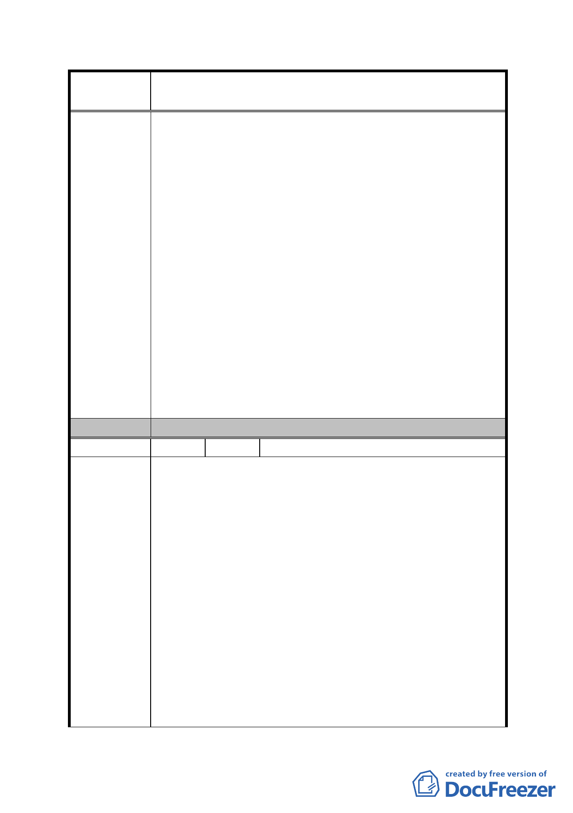

案
名
修訂臺北市「基隆河（中山橋至成美橋段）附近地區土地使
用分區與都市設計管制要點」（北段地區）計畫案
好好看」之 11 個案，各案建築物錯落配置，並讓出土地
細分規模之境界線之軸線，以維持本地區山系視覺廊道，
也將不會影響各案建築之特色。
三、建築容積：
提經臺北市政府「促進都市再生 2010 年臺北好好看」審
查委員會審查同意適用容積獎勵機制，且依都市設計審議
確認其公共性與容積獎勵不設上限。
四、建築物高度 :
未參與「促進都市再生 2010 年臺北好好看」之新開發案
沒有獎勵容積，若考量做商業購物使用，難以超過 60 公
尺。建議規範建築物低層部之商業使用，不需規範建築高
度。
五、土地使用強度之建蔽率
細部計畫管制該計畫區土地及建築物使用、建蔽率及容積
率。為鼓勵留設公共開放空間，應只規範最大建蔽率，不
應限定最小建蔽率。
委 員 會 決 議 同編號 1。
編 號 30 陳情人 瓏山林建設股份有限公司（A1、B2）
一、土地及建築物之使用議題 :
大內科工業區已開放作商業商務辦公使用，且租金低廉，
造成大彎北段地區之競爭力下降，商業辦公機能降低，若
仍須維持大量商業使用面積，商業區 (供商業購物中心使
用及一般商業使用)及娛樂區(供娛樂購物中心使用及娛
樂健身使用)之土地及建築物使用，其建築物低層部作附
表一指定使用項目之容積樓地板面積應達申請基地最小
陳 情 理 由 法定建蔽率（40%）之建築面積乘以 3 倍；故商業容積率
為 120%，於臺北好好看之各案，將會設置超過三層樓之商
業空間，對於市場評估提出本區辦公室需求已外移於大內
科工業區中，零售業發展為三樓以下為最佳之使用，超過
四樓以上將有違規事項產生之狀況下，對於超過三層樓之
商業市場將無法有效發展起來。
二、土地使用強度之建蔽率議題
大彎北段之發展定位為未來北市副都心，為兼顧商業、購
- 87 -